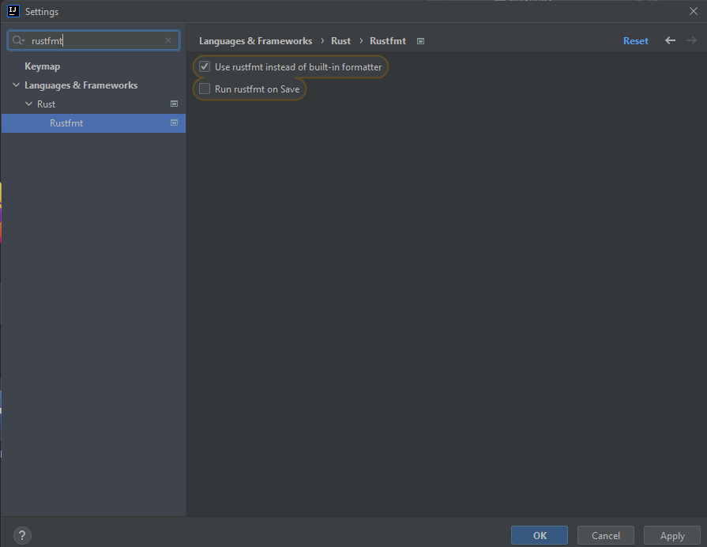
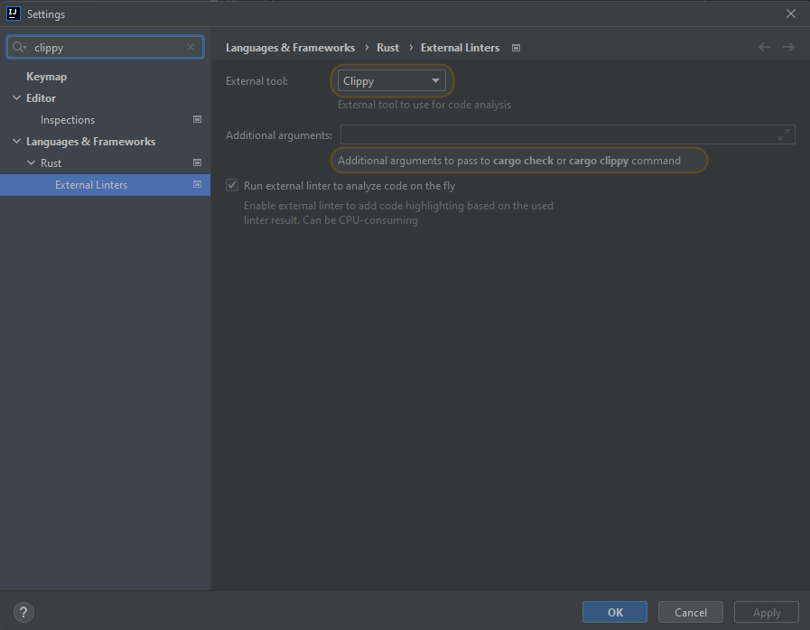

2022-03-22 (last edit: 2022-03-29)
There are no "constructors" in Rust. There is exactly one way to create an instance of a user-defined type: name it and initialize all its fields at once.
However, we often write associated functions that act as constructors.
In the below example you may notice a new keyword - pub. In Rust, almost everything is private by default (exceptions being items in a public trait and enum variants in a public enum). That means that it can be accessed from within the module it has been declared in, but cannot be accessed from the outside. So far we only worked with a singular file and no additional modules (apart from tests) so we didn't have to worry about it.
mod one {
pub struct Point {
x: i32,
}
impl Point {
pub fn new(x: i32) -> Point {
Point { x }
}
pub fn x(&self) -> i32 {
self.x
}
}
impl Default for Point {
fn default() -> Point {
Point { x: 10 }
}
}
}
fn main() {
// won't compile, can't initialize private fields
// let p = one::Point {
// x: 1,
// };
let p = one::Point::new(1);
// won't compile, x is private
// println!("{}", p.x);
println!("{}", p.x());
let p = one::Point::default();
println!("{}", p.x());
}
(Download the source code for this example: constructor.rs)
Note that in the above example, we wrote
Point { x }
instead of
Point { x: x }
If we need a custom destructor, we can implement the Drop trait.
Read more here.
Refer to this guideline for naming conventions.
Underscore is used to mark variables that are unused.
fn example(used: i32, _unused_param: i32) {
let _unused = 0;
match used {
_ => unimplemented!(),
}
}
It should not be used in other contexts.
entry is a convenient way to get a mutable reference to a value in a hashmap.
let mut map = std::collections::HashMap::new();
*map.entry("key").or_insert(0) += 1;
*map.entry("key").or_insert(0) += 1;
assert_eq!(map["key"], 2);
Number conversions are... not the most intuitive.
fn main() {
let small_number: u32 = u32::MAX;
// dbg!(small_number + 1); // this will panic (in debug builds, in release build it will wrap)
assert_eq!(small_number as u8, 255);
assert_eq!(small_number as i8, -1);
assert_eq!(small_number as i64, 4294967295);
let converted: Result<i8, _> = small_number.try_into();
assert!(converted.is_err());
}
(Download the source code for this example: number_conversions.rs)


Clippy can automagically fix some of the issues it detects if run with cargo clippy --fix